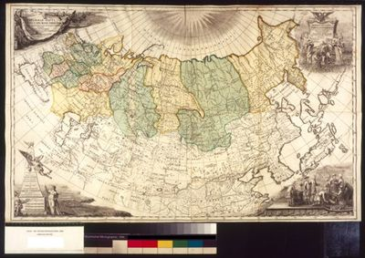

Generalʹnaja karta o Rossijskoj imperii / skolko vozmožno bylo ispravno sočinennaja trudom Ivana Kirilova ... = Imperii Russici tabula generalis : quo ad fieri potuit accuratissime descripta opera & studio Ioannis Kyrilow supremi senatus imperii Russici primi secretarii petropoli, by Kirillov, 1734. Image: e-rara. One of the 137 maps of Tartary in the TARTARY Project's collection at HKUST, catalogued on tartary.vercel.app. Its texts have not been transcribed yet.